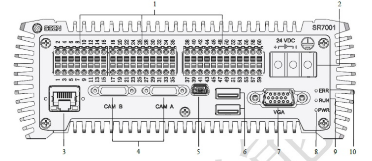
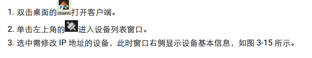

本部分介绍不同型号3D相机安装调试步骤，包括每个步骤需要注意的内容。
Step1：相机PIN线与机构插口连线；
Step2：点击任务栏右下角处小地球标志；
Step3：在右侧会弹出网络设置点击“网络和Internet设置”；
Step4：在设置界面，先点击以太网，在点击更改适配器选项；找到相机连接的网卡，双击或者右键属性打开；
Step5：双击红框“Internet协议版本4（TCP/IPv4）”进入IP设置界面；
Step6：设置静态IP，只需要按照规定设置IP地址和子网掩码；
注意
SmartRay的IP设置如下图所示。
设置好之后，相机需要断电重启
若采用多个网络端口来连接相机，则需要将网络设置在不同的网络段内，其他设置一样，例如在一台工站上链接两台相机时， IPv4 设置分别为： 192.168.178.10、 192.168.179.10。
为方便调试，修改的 IP 及端口号需要写在标签上，并粘贴到相机上。
Step7：打开VA软件，点击“设置”→“管理设备上连接的3D相机”打开3D相机管理界面，然后在相机列表栏鼠标右击然后点击“添加相机”，相机品牌选择“SmartRay”，然后设置相机IP（与图3-30所示，IP设置为：192.168.179.200），然后点击确定，等待相机连接成功；
Step8：相机连接成功后点击相机名称，然后点选“触发设置”table页，在该页内设置参数来调整相机的工作距离和成像；
①：设置相机的触发模式为“自由”，在该模式下相机激光可以一直出光，该模式下便于根据激光来调整相机的工作距离；
②：设置“曝光1”，该参数可以根据材料的材质进行设置，目的使得激光线的亮度；
③：点击“激光亮度图”，再点击开始，根据视图界面是否有激光线来调整相机的工作距离，然后根据激光线的质量来调整相机成像：激光线连贯、在重要测量区域激光线无缺失；；
Step9：调整好相机的工作距离和成像后，在“触发设置”table页设置相机采集参数；
①：设置扫描行数；该参数与相机的采集频率、物料的扫描长度、移动轴的移动速度有关（具体计算方式可参考SSZN调试步骤所示）；
②：Y分辨率；该参数的计算方式可参考SSZN调试步骤；
③：启用；启用该参数时相机可进行外触发模式；
④：选择相机的触发模式；包括：自由、内触发、外触发；其中自由模式为连续模式，该模式下相机根据自己内部时序运行；内触发：相机可设置频率，然后根据设置的频率进行运行；外触发：相机根据外部的触发信号进行运行；
⑤：选择外触发源；根据实际项目中相机的触发方式来选择触发源；
⑥：若外触发源为编码器触发时，该参数可启用，该参数的设置可参考SSZN调试步骤；
⑦：激光模式：脉冲、连续；该参数主要根据物料的材质特性进行设置；若连续模式下激光太亮则可选择脉冲模式使得激光亮度弱些；
Step10：退出3D相机管理界面，然后在VA工程师界面，添加3D相机采集工具；然后在工具属性栏“相机名称”选择调试好的相机；
问题1：VA软件连接不上相机
现象描述：
VA软件“3D相机设置工具”、“3D相机采集工具”中“相机名称”参数下拉框无内容，并且在“设置”→“3D相机”界面下相机列表中没有显示相机信息；
解决方案：
| 序号 | 可能原因 | 排查手段 | 排查结果（现象） |
|---|---|---|---|
| 1 | 相机没通电：电源损坏、供电电压不稳或供电处未插好 | 1：查看SmartRay相机后板电源指示灯状态；2：更换其他电源测试 | 1：指示灯不亮 |
| 2 | 网络未连接：IP设置不对 | 查看SmartRay指示灯状态 | 网络指示灯慢闪耀（约2s/次） |
| 3 | LCubor 3D相机SDK安装不正确 | 1：查看已安装SDK版本，并于1.1.1处相机驱动版本信息进行对照； | 1：LCubor 3D SDK也无法检测到相机 |
常见问题2：3D相机频繁掉线
现象描述：
现场工程运行工程中遇到工程运行到“3D相机设置工具”或者“3D图像采集工具”时就一直卡在该工具处，相机处于频繁掉线-连接状态；
解决方案：
| 序号 | 可能原因 | 排查手段 | 排查结果（现象） |
|---|---|---|---|
| 1 | 相机供电不稳定 | 1：查看相机指示灯状态；2：查看相机电源连接位置；3：查看相机供电电缆是否完好； | 1：指示灯灭后再亮，循环往复；2：相机供电使用工站供电，工站时长停机；3：相机供电线使用的是第三方电缆，柔韧性不好导致断裂。 |
| 2 | 固件版本不适合 | 点击查看VA→设置→3D相机界面相机列表选项处，查看相机固件版本，如图23所示 | 固件版本不合适：具体查看1.1.1 中VA软件支持的3D相机驱动版本内容 |
常见问题3：VA软件上图像显示正常，但相机无法触发
现象描述：
3D相机采集过程中不出光，必须重新停止，再点击运行按钮才会恢复采集。
解决方案：
| 序号 | 可能原因 | 排查手段 | 排查结果（现象） |
|---|---|---|---|
| 1 | 相机在采集准备阶段或采集过程中掉线 | 在确认SDK和VA安装正常以及相关硬件都完好的情况下，请确认当前应用环境下的相机触发模式和相关信号输入是否正常以及相应的触发模式下的连线是否正常 |
常见问题4：3D相机不出光
现象描述：
3D相机不出光，下一个物料来的时候又出光。
解决方案：
| 序号 | 可能原因 | 排查手段 | 排查结果（现象） |
|---|---|---|---|
| 1 | 相机开始触发信号接收异常，不同步导致， | 1：查看PLC与相机的信号传送时序； | 1.相机运行前加上与PLC通讯协议，准备好再给触发；2. 对齐发送触发的时间，对应的CT时间也需要进行排查，会不会因为处理时间过长，导致硬件脉冲没有及时捕捉； |
| 2 | 相机固件版本不匹配 | 使用VA软件3D控制界面，点击相机（点击界面左侧相机SN，左侧下方会显示相机固件信息）查看固件信息； | 固件版本非：5.1.1.3; |
常见问题5：无法找回SmartRay相机IP
现象描述：
在设置IP时部分使用者设置的IP可能不是192.168.178，而是其他IP地址，但是经过很长时间之后（或者更换工控机后），使用者忘记了当时设置的IP，导致无法连接相机；
解决方案：
| 序号 | 可能原因 | 排查手段 | 排查结果（现象） |
|---|---|---|---|
| 1 | —- | 1：下载安装第三方IP查看软件（软件名称：wireshark），然后连接相机使用第三方软件寻回相机IP | 具体步骤与现象如下图所示 |
SmartRay相机IP找回步骤
Step1：下载安装第三方软件：wireshark；
Step2：以管理员的身份运行Wireshark软件，然后点击软件中如图19所示的按钮，选择对应的网口，若连接传感器，则选择对应的local Area Connection. 然后点击开始，这时传感器是没上电的！！
Step3：传感器上电，查看到对应所连接设备的IP，只需查看第二列即可，如下图所示，192.168.179.10即为我们设置的IP。
注意
为方便调试，修改的 IP 及端口号需要写在标签上，并粘贴到相机上；
接下来介绍KEYENCE LJ-X8000系列相机直接在VISIONAssembly6.5.xxx版本中调试步骤；
Step3：成像效果调节；
我们使用VISIONAssembly6.5版本软件调节成像，使用编码器触发时，设置参数如图所示；

输入模式选择：1相1递增（该选项主要控制控制盒接收的编码器信号的输出形式，没有特殊要求，建议使用“1相1递增”即可）；
细化点数：该参数也称“分频”，分频数的计算方式与编码器的信号频率以及编码器的移动速度有关；距离说明计算方式；
比如：编码器移动1mm输出1000个信号、此相机参数下的最大采集频率5000fps，移动轴的移动速度60mm/s，移动轴移动距离：120mm；该情况下的细化点数计算方式如下：
轴移动1mm耗时：1/60s；
编码器输出信号频率：1000/（1/60s）=60000Hz
则分频数：60000/5000=12
最大频率：编码器触发模式下的实际采集频率不大于该参数，实际采集频率与移动轴的输出信号频率以及细化点数有关；该下拉框最大值与Z方向设置的测量范围（VA软件目前版本不支持该参数设置，您可在KEYENCE软件中设置该参数）、曝光时间参数有关（Z方向设置的测量范围越小、曝光时间越短则可设置的“最大频率”越大）；
设置好参数之后点击“完成”退出LJ-X软件；接下来打开VA软件来完成图像采集；
Step4：在工程界面设置图像采集工程，如图3-36所示；

输出与供电结构描述
LCubor 3D输入输出供电接口及接口含义
LCubor 3D相机指示灯含义及状态说明
LCubor 3D相机连接设置
请先将相机连接到工控机上：网线一端连接相机，另一端连接工控机网口，同时连接电源给相机独立供电。
要求网线是超五类的高柔线。
连接后，确认相机一端的网线是安装到位的，相机上有指示灯，根据上述给出的指示灯含义来确认相机的连接情况。
SSZN相机实物图及结构图
| 序号 | 名称 | 功能说明 |
|---|---|---|
| 1 | 激光发射LED | 绿灯长亮：物体在Z轴中心附近（±5%量程） |
| 黄灯长亮：物体在Z轴范围内 | ||
| 黄灯闪耀：物体超出Z轴范围 | ||
| 黄灯或者绿灯亮：激光器正在工作 | ||
| 灭灯：未通电 | ||
| 红灯亮：传感器故障警告 | ||
| 2 | 安装专用螺丝孔 | 安装传感头时可使用该螺丝孔 |
| 3 | 安装孔 | 使用附带的六角带孔螺栓安装传感头 |
| 4 | 遮光金属板安装孔 | 将遮光金属板等安装至传感头时使用；禁止用于固定传感头。 |
| 5 | 传感头感光窗口 | 接收测量所使用的激光 |
| 6 | 激光发射窗口 | 发射测量所使用的激光 |
| 7 | 传感头线缆接口 |
SSZN控制器及其引脚说明

| 引脚 | 信号 | 说明 | 参考 |
|---|---|---|---|
| 1~10 | 保留 | ||
| 11 | LEVELCONTROL_ENABLE | 批处理测量开始信号电平控制使能。用于切换引脚14“批处理测量开始”的输入信号为电平控制模式，同时引脚15“批处理停止”输入无效。 | |
| 12 | 保留 | ||
| 13 | 保留 | ||
| 14 | MEASURE_START | 批处理测量开始输入，开始批处理测量。（数字信号输入，光隔离，低电平有效。） | |
| 15 | MEASURE_STOP | 批处理测量停止输入，停止批处理测量。（数字信号输入，光隔离，低电平有效。） | |
| 16 | 保留 | ||
| 17 | TRG | 触发输入，激活外部触发。（高速数字信号输入，光隔离，低电平有效。） | |
| 18 | COM_OUT | 输出信号公共端子 | COM_OUT |
| 19 | COM_IN | 输入信号公共端子 | |
| 20 | COM_OUT | 输出信号公共端子 | COM_OUT |
| 21~32 | 保留 | ||
| 33 | READY | 批处理状态输出。批处理过程中输出低电平，非批处理时输出高电平。 | COM_OUT |
| 34 | 保留 | ||
| 35 | 保留 | ||
| 36 | 保留 | ||
| 37 | ENC_A1+ | 差分编码器A相输入正极，光隔离，RS-422规范差分输入（内置AM26LS32相当品）。 | |
| 38 | ENC_A1- | 差分编码器A相输入负极，光隔离，RS-422规范差分输入（内置AM26LS32相当品）。 | |
| 39 | ENC_B1+ | 差分编码器B相输入正极，光隔离，RS-422规范差分输入（内置AM26LS32相当品）。 | |
| 40 | ENC_B1- | 差分编码器B相输入负极，光隔离，RS-422规范差分输入（内置AM26LS32相当品）。 | |
| 41 | ENC_Z1+ | 差分编码器Z相输入正极，光隔离，RS-422规范差分输入（内置AM26LS32相当品）。 | |
| 42 | ENC_Z1- | 差分编码器Z相输入负极，光隔离，RS-422规范差分输入（内置AM26LS32相当品）。 | |
| 43 | ENC_A2_+24V | 单端编码器A相输入正极，24V电压端，光隔离。（注：当编码器是NPN集电极开路输出时，接24V电源正极；当编码器是PNP集电极开路输出时，接编码器A相输出极）。 | |
| 44 | ENC_A2_+12V | 单端编码器A相输入正极，12V电压端，光隔离。（注：当编码器是NPN集电极开路输出时，接12V电源正极；当编码器是PNP集电极开路输出时，接编码器A相输出极）。 | |
| 45 | ENC_A2_+5V | 单端编码器A相输入正极，5V电压端，光隔离。（注：当编码器是NPN集电极开路输出时，接5V电源正极；当编码器是PNP集电极开路输出时，接编码器A相输出极）。 | |
| 46 | ENC_A2_COM- | 单端编码器A相输入负极,公共端，光隔离。（注：当编码器是NPN集电极开路输出时，接编码器A相输出极；当编码器是PNP集电极开路输出时，接5V或12V或24V电源负极）。 | |
| 47 | ENC_B2_+24V | 单端编码器B相输入正极，24V电压端，光隔离。（注：当编码器是NPN集电极开路输出时，接24V电源正极；当编码器是PNP集电极开路输出时，接编码器B相输出极）。 | |
| 48 | ENC_B2_+12V | 单端编码器B相输入正极，12V电压端，光隔离。（注：当编码器是NPN集电极开路输出时，接12V电源正极；当编码器是PNP集电极开路输出时，接编码器B相输出极）。 | |
| 49 | ENC_B2_+5V | 单端编码器B相输入正极，5V电压端，光隔离。（注：当编码器是NPN集电极开路输出时，接5V电源正极；当编码器是PNP集电极开路输出时，接编码器B相输出极）。 | |
| 50 | ENC_B2_COM- | 单端编码器B相输入负极,公共端，光隔离。（注：当编码器是NPN集电极开路输出时，接编码器B相输出极；当编码器是PNP集电极开路输出时，接5V或12V或24V电源负极）。 | |
| 51 | ENC_Z2_+24V | 单端编码器Z相输入正极，24V电压端，光隔离。（注：当编码器是NPN集电极开路输出时，接24V电源正极；当编码器是PNP集电极开路输出时，接编码器Z相输出极）。 | |
| 52 | ENC_Z2_+12V | 单端编码器Z相输入正极，12V电压端，光隔离。（注：当编码器是NPN集电极开路输出时，接12V电源正极；当编码器是PNP集电极开路输出时，接编码器Z相输出极）。 | |
| 53 | ENC_Z2_+5V | 单端编码器Z相输入正极，5V电压端，光隔离。（注：当编码器是NPN集电极开路输出时，接5V电源正极；当编码器是PNP集电极开路输出时，接编码器Z相输出极）。 | |
| 54 | ENC_Z2_COM- | 单端编码器Z相输入负极,公共端，光隔离。（注：当编码器是NPN集电极开路输出时，接编码器Z相输出极；当编码器是PNP集电极开路输出时，接5V或12V或24V电源负极）。 | |
| 55~60 | 保留 |
测量开始使用软件信号触发
测量开始使用边沿信号触发
测量开始使用持续的电平信号触发
安装示意图


注意事项
测量死角
杂散光
Step1：将传感器线缆连接到空着数据通信接口上；
注意
若仅使用1个传感器，应连接到CAM A连接器上，用一字螺丝刀拧紧连接器两侧的螺丝。
Step2：连接传感器线缆
传感器线缆连接示意图
实际项目中编码器触发模式下控制盒的连线
注意
线缆连接时应断电操作
请使用AWG14~AWG20的电缆
DC24V电源功率要求不小于36W
端子台为压接端子时，请使用如下大小，是和M3螺丝的产品
Step3：SSZN相机IP设置；
接下来介绍SSZN系列相机直接在VISIONAssembly6.5.xxx版本中调试步骤；
Step4：双击VISIONAssemby软件图标打开软件，依次点击“设置”→“管理设备上连接的3D相机”，打开“3D相机管理界面”，步骤如图所示：
Step5：在相机列表栏右键点击添加相机，选择SSZN相机，设置好相机IP，点击确定，等待相机连接成功提示（注意：界面左下角显示相机的连接状态），具体步骤如下图所示；
Step6：成像效果调节；
我们使用VISIONAssembly6.5版本软件调节成像，使用编码器触发时，设置参数如图所示；
输入模式选择：1相1递增（该选项主要控制控制盒接收的编码器信号的输出形式，没有特殊要求，建议使用“1相1递增”即可）；
细化点数：该参数也称“分频”，分频数的计算方式与编码器的信号频率以及编码器的移动速度有关；距离说明计算方式；
比如：编码器移动1mm输出1000个信号、此相机参数下的最大采集频率5000fps，移动轴的移动速度60mm/s，移动轴移动距离：120mm；该情况下的细化点数计算方式如下：
轴移动1mm耗时：1/60s；
编码器输出信号频率：1000/（1/60s）=60000Hz
则分频数：60000/5000=12
最大频率：编码器触发模式下的实际采集频率不大于该参数，实际采集频率与移动轴的输出信号频率以及细化点数有关；该下拉框最大值与Z方向设置的测量范围（VA软件目前版本不支持该参数设置，您可在KEYENCE软件中设置该参数）、曝光时间参数有关（Z方向设置的测量范围越小、曝光时间越短则可设置的“最大频率”越大）；
设置好参数之后点击“完成”退出LJ-X软件；接下来打开VA软件来完成图像采集；
Step7：退出3D相机管理界面，然后在VA工程师界面，添加3D相机采集工具；然后在工具属性栏“相机名称”选择调试好的相机；
| 硬件 | 基本要求 |
|---|---|
| CPU | Intel i7 5代以上（i7，i9，Xeon） |
| ARM | 16GB以上 |
| GPU | 核显、独显均可，推荐Intel和Nvidia显卡 |
| HHD | SSD 256G以上（不推荐使用机械硬盘） |
| 网卡 | 千兆网卡，支持9014Bytes巨型帧 |
| 系统 | 推荐Windows10（windows7需要安装kb3033929补丁） |
| PIN号 | 颜色 | 名称 | 含义 |
|---|---|---|---|
| 1 | 白橙色 | Input 1 | 触发信号+ |
| 2 | 橙色 | input GND | 信号输入公共地 |
| 3 | 白绿色 | RS485-B | RS485 B线 |
| 4 | 绿色 | RS485-A | RS485 A线 |
| 5 | 蓝色 | Input 3 | Location信号清零线 |
| 6 | 白色 | GND | 24V电源负 |
| 7 | 棕色 | 24V | 24V电源正 |
| 8 | 黑色 | Input 2 | 触发使能/禁用线 |
| PIN号 | 颜色 | 名称 | 含义 |
|---|---|---|---|
| 1 | 棕色 | Output 1 | 24V输出1（500mA） |
| 2 | 蓝色 | Output 2 | 24V输出2（500mA） |
| 3 | 白色 | Output 3 | 24V输出3（500mA） |
| 4 | 绿色 | Output 4 | 24V输出4（500mA） |
| 5 | 粉色 | Input 4 | 输入4（24V） |
| 6 | 黄色 | Not in use | |
| 7 | 黑色 | Output GND | 输出公共接地 |
| 8 | 灰色 | Output GND | 输出公共接地 |
| 9 | 红色 | Not in use | |
| 10 | 紫色 | Not in use | |
| 11 | 灰-粉色 | 24V Out | 来自 X2 的 24 V 输出 24 V输出 |
| 12 | 红-蓝色 | 24V Out | 来自 X2 的 24 V 输出 24 V输入 |
| 13 | 白-绿色 | Input GND | 输入公共接地 |
| 14 | 棕-绿色 | Not in use | |
| 15 | 白-黄色 | Not in use | |
| 16 | 黄-棕色 | Not in use | |
| 17 | 白-灰色 | Not in use |
LMI FOCALSPEC相机尺寸与连线
Step1：点击任务栏右下角处小地球标志；
Step2：在右侧会弹出网络设置点击“网络和Internet设置”；
Step3：在设置界面，先点击以太网，在点击更改适配器选项；找到相机连接的网卡，双击或者右键属性打开；
Step4：双击红框“Internet协议版本4（TCP/IPv4）”进入IP设置界面；
Step5：设置静态IP，只需要按照规定设置IP地址和子网掩码；

Step6：打开VA软件，点击“设置”→“管理设备上连接的3D相机”打开3D相机管理界面，即可看到RVC相机已自动连接上。


